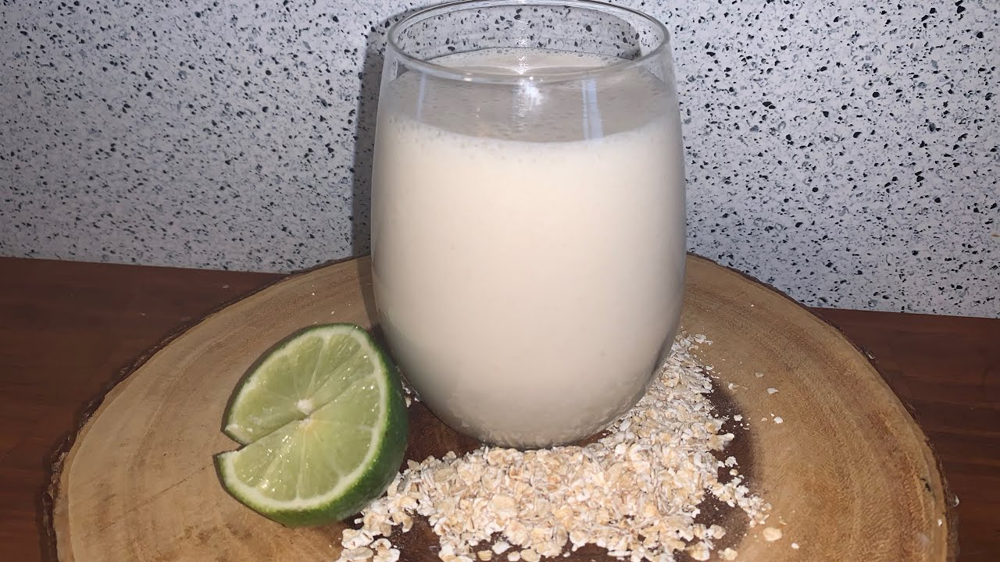

El jugo de avena es una bebida que es un desayuno completo,
con las propiedades saludables del avena,y las vitaminas del limon y la leche.

ingredientes
1 taza de avena
1 litro de leche
1 taza de azucar
3 limones
2 tazas hielo
paso a paso
1: mezcla la avena y la leche y licua a alta velocidad por 3 minutos,
agrega azucar al gusto cuela y deshazte de los solidos [opcional] 2: hechalo en un jaron despues hechale el limon lentamente y listo para tomar.
esta receta fue copiada de la pagina:https://www.cocinadominicana.com/jugo-de-avena#wprm-recipe-container-14951